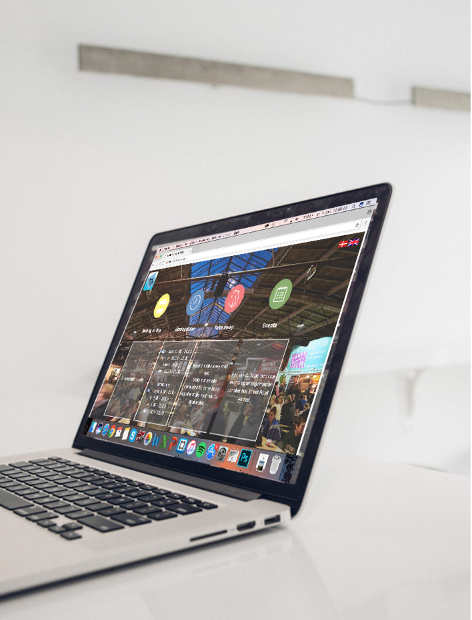

PROJEKT 1.1
Gruppemedlemmer: Mikkel, Mikael, Amalie og Karoline
Kunde: Aarhus Street Food
Dato: 4. - 15 september 2017
Hjemmesiden: https://amalievammen.github.io/streetfoodaarhus/
Projektet 1.1 gik ud på, at vi skulle finde en kunde som var tilstede under Aarhus kulturho-vedstad 2017. Slagplanen gik ud på, at vi skulle følge en sprint model fra mandag til fredag. Vi skulle følge planen dag for dag, det vil sige, at vi hver for sig i gruppen mandag, skulle finde ud af et problem og vælge den vigtigste place at fokusere på. Tirsdag skulle vi lave en skitse på papir hver for sig, og onsdag skulle vi alle i gruppen putte vores ideer sammen. Torsdag forgår det sådan, at vi skulle lave en realistisk prototype, og fredag skulle vi så ud og teste produktet, som vi er kommet frem til og fremlægge det foran andre mennesker. Det vil altså sige, at hvis Gud kunne skabe jorden og mennesket på blot seks dage, så kan vi også udvikle et godt udkast på en arbejdsuge.
Vi var ud for at observere og snakket med nogle af medarbejderne i boderne, som havde sagt at det de synes manglede ved Aarhus Street Food, var at det kunne være smart at man havde muligheden for at bestille det som take away hjemmefra, så de ikke skulle være forberedt på, at der ville komme mange gæster, også kom der måske ikke så mange som de lige gik og troe-de, og derfor skulle smide en masse mad ud. Ud fra vores snak, lavede vi 3 forskellige perso-nas, som vi så kunne bruge i ugen hvor vi skulle følge sprint modellen.
Mandag startede vi med at sætte os med en stank papir hver i sær, og prøvede at finde frem til nogle spørgsmål, som kunderne hos Street Food ville få, når de besøger Street Food. Efter vi havde siddet med dette i en times tid, fandt vi frem til nogle spørgsmål, som skal være med til at danne en baggrund for vores idéudvikling i løbet af ugen. Sidst på dagen lavede vi de skitser vi havde lavet, lidt mere let læselig, så andre også havde mulighed for at læse vores tanker.
Tirsdag mødtes vi efter en god nats søvn til en ny dag med sprint modellen. Det er i dag vi kommer til at gå fra problemet til en mulig løsning. I dag er igen en arbejd-selv-dag, hvor vi startede med at folde et stykke A4 papir, og vi skulle så for hver firkant skitsere løsninger. Vi tjekkede derefter også ud hvad andre gjorde, angående de ting som Street Foods medarbejder gerne ville havde ændret.
Onsdag kom de enkelt løsningsforslag, vi havde fundet dagen forinden, samlede til én løsning. Min gruppe og jeg snakkede så om de forskellige løsningsforslag, at deres oversigt over de forskellige boder, ikke var særlig brugervenlig, så den ville være tilgængelig på ens mobil. Men der var også en anden ting, vi faldt over angående de forskellige løsningsforslag nemlig selve deres menukort, den er ikke til at finde nogle steder på deres hjemmeside, og heller ikke hvis man fx er allergikere. Sidste men ikke mindst ville en take away også være en ting, vi ville fin-de en løsning på. Så der var flere idéer, som vi hver især var kommet med, som vi ville ændre på, så vi valgte mere end én løsning. Alle de her forskellige idéer, skulle så samles i en app, og derefter udviklede vi et storyboard, som også skulle inkludere brugernes oplevelse.
Torsdag gik vi i gang med at ”bygge” vores prototype. Vi startede med at lave wireframes af vores hjemmeside og et mere skitseret wireframe af vores app. Derefter lavede vi en hjemme-side for Aarhus Street Food, fordi vi gerne ville havde deres hjemmeside og deres App til at passe sammen. Så hele torsdagen brugte vi på at opbygge hjemmesiden, og lave siderne til vores App i Photoshop. Derefter tænkte vi, at vi skulle vise app’en på en fysisk måde, så derfor gik vi i gang med at ”bygge” en iPhone ud af pap, så siderne for app’en passede til vores byggede iPhone.
Fredag var den store test dag, vi skulle nemlig fremlægge, hvad vi var kommet frem til for vo-res lærer. Inden da var vi ude for at teste vores prototyper for to brugere. Vi fik en rigtig fin respons efter, vi havde fremlagt. Det jeg har lært i denne her uge, er ved vo-res fremlæggelse, nemlig at man ikke bare kan lave en ting, som vi i gruppen og en anden medarbejder ved Aarhus Street Food synes godt om. Det er vigtigt, at man kan argumentere for, hvorfor lige man har valgt at gøre sådan her, så derfor er det vigtigt at have flere end en eller to til at sige om, hvad de synes man skal gøre, eller om det er en god idé. Så det er helt sikkert noget, jeg vil tage med til det næste case projekt.
Alt i alt synes jeg det var en rigtig god uge, hvor jeg har lært rigtig meget. En anden ting jeg er rigtig stolt over, er at jeg lige så stille lære at kode hjemmesider, det begynder hele at falde mere på plads, og giver lige så stille mere og mere mening for mig, hvor man lige skal skrive det henne osv.
Selve gruppearbejdet gik fint, vi havde selvfølgelig lidt problemer med omkring det, at man altså skal møde op i gruppearbejde, og ikke skrive den sidste dag hvor man skal fremlægge, om der er noget man kan hjælpe med. Men ellers fungerede gruppearbejdet rigtig fint, dejligt at der både er piger og drenge i en gruppe, fordi så ser man tingene fra to forskellige syns-punkter. Jeg synes selve sprint modellen, kræver mere tid end vi faktisk lige behøvede, men når det så er sagt, så er der jo også en masse at lave, som man sagtens kan bruge tiden på som er sat af til sprint modellen, men det er jeg ret sikker på, at det er noget vi kan lære hen af tiden.
